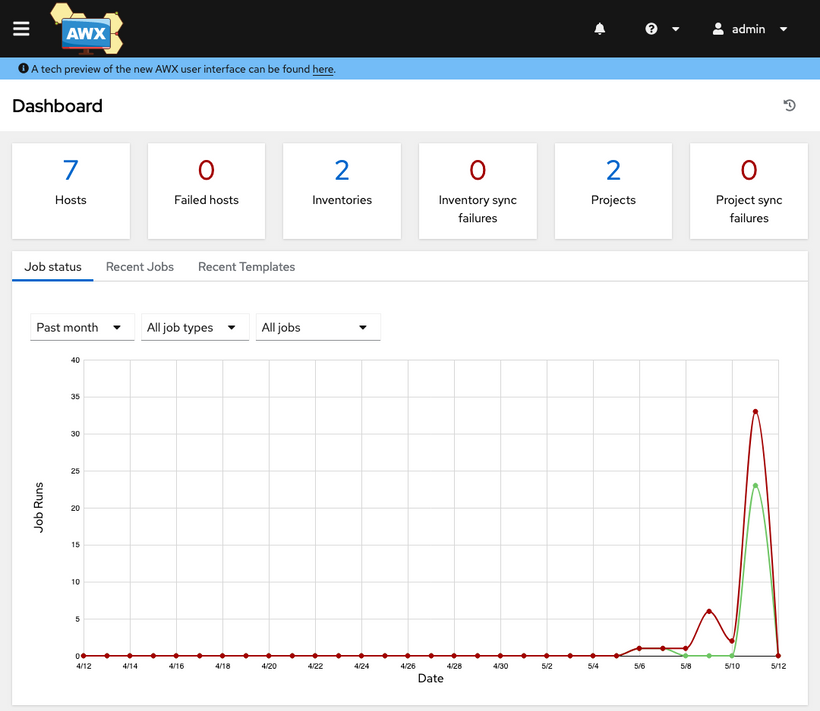

Orchestrating playbooks with Ansible AWX¶
Ansible AWX is the open-source project that the automation controller (formerly Ansible Tower) is derived from. Both are orchestrators for Ansible playbooks: they manage playbooks in the form of projects, credentials, schedules and reports.
The installation of AWX is particularly complex and has changed several times over the years. Currently, it requires a Kubernetes environment, which we install on an Ubuntu Linux Server system.
We need a system with the following specifications:
- Ubuntu Linux Server 22.04.
- 8 cores.
- 8 GB of RAM.
- 50 GB of disk space.
Docker¶
First, we install Docker by following the official documentation.
Remove any packages related to previous versions:
Add the official Docker repository:
wget -qO- https://download.docker.com/linux/ubuntu/gpg | apt-key add -
add-apt-repository "deb [arch=$(dpkg --print-architecture)] https://download.docker.com/linux/ubuntu $(. /etc/os-release && echo "$VERSION_CODENAME") stable"
Finally, install Docker:
Minikube¶
Minikube gives us a complete Kubernetes instance inside a single virtual machine.
Let's install Minikube:
curl -LO https://storage.googleapis.com/minikube/releases/latest/minikube-linux-amd64
install minikube-linux-amd64 /usr/local/bin/minikube && rm minikube-linux-amd64
Then, with an unprivileged user that belongs to the docker group, we create the Kubernetes instance:
For simplicity, let's add an alias that lets us use the kubectl command:
Installing AWX¶
Check the AWX Operator repository to see which tag we can use (2.16.1) and create the files needed to set up the environment:
# awx/kustomization.yaml
apiVersion: kustomize.config.k8s.io/v1beta1
kind: Kustomization
namespace: awx
images:
- name: quay.io/ansible/awx-operator
newTag: 2.16.1
resources:
- github.com/ansible/awx-operator/config/default?ref=2.16.1
Then apply the changes:
Monitor the creation of the pods with the following command and wait for it to finish:
Then create the resource file:
# awx/awx.yaml
apiVersion: awx.ansible.com/v1beta1
kind: AWX
metadata:
name: awx
spec:
service_type: nodeport
And associate it with the file created earlier:
# awx/kustomization.yaml
apiVersion: kustomize.config.k8s.io/v1beta1
kind: Kustomization
namespace: awx
images:
- name: quay.io/ansible/awx-operator
newTag: 2.16.1
resources:
- github.com/ansible/awx-operator/config/default?ref=2.16.1
- awx.yaml
Then apply the changes again:
And monitor the logs related to the creation of the AWX service:
We can also monitor the status of the pods:
At the end of the process, the AWX service should be available:
Now we need to make the AWX service reachable from the outside:
The AWX web interface should now be available on port 8080. We can log in with the user admin; the password can be retrieved with the following command:

In case of issues, we check the status of the entire environment with the following commands:
minikube status
minikube service list
kubectl get pods -A
kubectl get services -n awx
kubectl logs -n awx -f deployments/awx-operator-controller-manager
kubectl logs -n awx -f deployments/awx-task
kubectl logs -n awx -f deployments/awx-web
In extreme cases, we can get a shell inside the various containers:
ansible-pylibssh¶
If we need the ansible-pylibssh library, we have to make an additional change. By default, AWX, like Ansible, uses the paramiko library. The playbook is executed by a container created at runtime from the awx-ee image:
If we run a playbook using the default environment, we get the following error:
[WARNING]: ansible-pylibssh not installed, falling back to paramiko
fatal: [sw1.example.com]: FAILED! => {"changed": false, "msg": "No existing session"}
We can force the use of pylibssh by setting the following variable:
In this case, we get a more explicit error:
fatal: [sw1.example.com]: FAILED! => {"changed": false, "msg": "Failed to import the required Python library (ansible-pylibssh) on automation-job-11-m85n8's Python /usr/bin/python3. Please read the module documentation and install it in the appropriate location. If the required library is installed, but Ansible is using the wrong Python interpreter, please consult the documentation on ansible_python_interpreter"}
There is a third-party EE image (Execution Environment) that contains ansible-pylibssh, but it is a year old and comes with no guarantee.
The GitHub repository contains the structure used to create the dainok/awx-ee-pylibssh image. In particular, there are four files:
dependencies/bindep.txt: contains the list of RPM packages to install in the image.dependencies/requirements.txt: contains the list of Python packages to install in the image.dependencies/requirements.yml: contains the Ansible Galaxy collections to install in the image.execution-environment.yml: defines how to create the image from a specific version ofawx-ee, based on the dependencies defined above.
Let's create the environment to build the image:
cd "/opt/courses/Ansible/A5. AWX"
python3 -m venv venv
source venv/bin/activate
pip install ansible==9.5.1 ansible-builder==3.0.1
ansible-builder build --tag dainok/awx-ee-pylibssh:1 --container-runtime docker --verbosity 3
Once the build is complete, we can publish the image on Docker Hub:
docker login
docker tag dainok/awx-ee-pylibssh:1 dainok/awx-ee-pylibssh:latest
docker push dainok/awx-ee-pylibssh:1
docker push dainok/awx-ee-pylibssh:latest
Bastion Host¶
We described the architecture of the bastion host in a previous lesson, and here we use the same architecture.
First, we copy the content of the id_rsa.pub file into the authorized_keys file of the bastion host. Then we make the private key id_rsa available to AWX:
In AWX, go to Instance Groups → default → Edit → Customize pod specification. The content should be similar to the following:
apiVersion: v1
kind: Pod
metadata:
namespace: awx
spec:
serviceAccountName: default
automountServiceAccountToken: false
containers:
- image: quay.io/ansible/awx-ee:latest
name: worker
args:
- ansible-runner
- worker
- '--private-data-dir=/runner'
resources:
requests:
cpu: 250m
memory: 100Mi
Customize the configuration so that the key stored as a Secret is available as a local file:
apiVersion: v1
kind: Pod
metadata:
namespace: awx
spec:
serviceAccountName: default
automountServiceAccountToken: false
containers:
- image: quay.io/ansible/awx-ee:latest
name: worker
args:
- ansible-runner
- worker
- '--private-data-dir=/runner'
resources:
requests:
cpu: 250m
memory: 100Mi
# Custom config starts here
volumeMounts:
- name: ssh-keys
mountPath: /opt/bastionhost_id_rsa
readOnly: true
volumes:
- name: ssh-keys
secret:
secretName: bastion-host-key
defaultMode: 0400
securityContext:
runAsUser: 1000 # The AWX user
fsGroup: 1000 # The AWX user
Finally, in the inventory (Resources → Inventories → Cisco Legacy Core-Access topology), add the variables that force the use of the bastion host:
ansible_connection: ansible.netcommon.network_cli
ansible_network_os: cisco.ios.ios
ansible_network_cli_ssh_type: paramiko
ansible_ssh_common_args: -o ProxyCommand="ssh -o IdentityFile=/opt/bastionhost_id_rsa/ssh-privatekey -o StrictHostKeyChecking=no -o UserKnownHostsFile=/dev/null -W %h:%p -q dev@172.25.82.110"
Now all the playbooks associated with the Cisco Legacy Core-Access topology inventory are executed via the bastion host.
Dependencies¶
The playbook repositories we use in AWX must list the Ansible Galaxy collections they need in the collections/requirements.yml file:
The same file can be used to install the dependencies in the local environment:
Configuring AWX¶
First, let's create the execution environment (EE) using the Docker image we built earlier. In Administration → Execution Environments, add a new image:
- Name:
awx-ee-pylibssh. - Image:
dainok/awx-ee-pylibssh:1. - Pull: Only pull the image if not present before running.
Now go to Resources → Projects and add a project that uses the GitHub repository of the course:
- Name:
Courses. - Execution Environment:
awx-ee-pylibssh. - Source Control Type:
Git. - Source Control URL: https://github.com/dainok/courses.
Next, go to Resources → Inventories and create a new inventory of type inventory:
- Name:
Cisco Legacy Core-Access topology.
The inventory has the following variables, defined in YAML format:
ansible_connection: ansible.netcommon.network_cli
ansible_network_os: cisco.ios.ios
ansible_network_cli_ssh_type: libssh
Then create the two groups used in the playbooks: core and access.
Add the credentials by going to Resources → Credentials:
- Name:
Cisco Lab. - Credential Type:
Machine. - Username:
admin. - Password:
cisco.
Finally, add the six devices, associating each with the correct group:
sw1.example.com:coregroup, with variableansible_host: 169.254.1.101.sw2.example.com:coregroup, with variableansible_host: 169.254.1.102.sw3.example.com:accessgroup, with variableansible_host: 169.254.1.103.sw4.example.com:accessgroup, with variableansible_host: 169.254.1.104.sw5.example.com:accessgroup, with variableansible_host: 169.254.1.105.sw6.example.com:accessgroup, with variableansible_host: 169.254.1.106.
Finally, create the template to run the playbook. Go to Resources → Templates and add a new template:
- Name:
Fabric provisioning. - Job Type:
Run. - Inventory:
Cisco Legacy Core-Access topology. - Project:
Courses. - Playbook:
Ansible/21. Final lab/playbook-fabric-setup.yml. - Credentials:
Cisco Lab.
Save the template and run it. Under Jobs, you can see the result of the job and its logs.
The first execution may take longer, because AWX has to create the container used to run the playbook:
$ kubectl get pods -A
NAMESPACE NAME READY STATUS RESTARTS AGE
awx automation-job-5-plmtj 0/1 ContainerCreating 0 6m56s
awx awx-migration-24.3.1-qmncx 0/1 Completed 0 42h
awx awx-operator-controller-manager-5b795f7bb-597fv 2/2 Running 17 (22h ago) 42h
awx awx-postgres-15-0 1/1 Running 0 42h
awx awx-task-77b9bcbc8d-txjl8 4/4 Running 0 42h
awx awx-web-7569c8f4f9-dxmvk 3/3 Running 0 42h
Troubleshooting¶
There are many moving parts that can fail. Let's summarize the errors we may encounter.
The execution of the job should trigger the download of the Docker image we created. Let's verify it with:
$ minikube ssh docker images
REPOSITORY TAG IMAGE ID CREATED SIZE
dainok/awx-ee-pylibssh 1 f2bee65d1f1c 18 hours ago 3.36GB
If the creation of the container takes longer than expected, and in particular if it stops at ContainerCreating, we can analyze the problem with:
If the image is not downloaded correctly, we check the URL, including the tag. The error associated with the failure to retrieve the image is:
If the logs report a timeout when connecting to the devices, the configuration of the bastion host may be incorrect:
fatal: [sw1.example.com]: FAILED! => {"changed": false, "msg": "ssh connection failed: ssh connect failed: Timeout connecting to 169.254.1.111"}
A similar error probably indicates that the bastion host, if used, is not reachable:
fatal: [sw1.example.com]: FAILED! => {"changed": false, "msg": "ssh connection failed: ssh connect failed: Socket error: Connection reset by peer"}
In this case, we should see similar logs on the bastion host:
If we get errors related to the pylibssh library, we must make sure that we are using the correct EE image, referenced at the inventory and/or template level. For instance, if we receive a warning that ansible-pylibssh is not installed, followed by a failure message about a missing session, we see the following:
[WARNING]: ansible-pylibssh not installed, falling back to paramiko
ok: [sw1.example.com]
TASK [cisco_ios_system : CONFIGURING HOSTNAME AND DOMAIN NAME] *****************
fatal: [sw1.example.com]: FAILED! => {"changed": false, "msg": "No existing session"}
To avoid ambiguity, if we are not using a bastion host, we make sure that the use of pylibssh is enforced by the configuration; otherwise, we may get an error similar to this:
fatal: [sw1.example.com]: FAILED! => {"changed": false, "msg": "Failed to import the required Python library (ansible-pylibssh) on automation-job-11-m85n8's Python /usr/bin/python3. Please read the module documentation and install it in the appropriate location. If the required library is installed, but Ansible is using the wrong Python interpreter, please consult the documentation on ansible_python_interpreter"}
If we have connection problems with outdated devices, we may see an error like this:
fatal: [sw1.example.com]: FAILED! => {"changed": false, "msg": "ssh connection failed: ssh connect failed: kex error : no match for method kex algos: server [diffie-hellman-group-exchange-sha1,diffie-hellman-group14-sha1,diffie-hellman-group1-sha1], client [curve25519-sha256,curve25519-sha256@libssh.org,ecdh-sha2-nistp256,ecdh-sha2-nistp384,ecdh-sha2-nistp521,diffie-hellman-group-exchange-sha256,diffie-hellman-group14-sha256,diffie-hellman-group16-sha512,diffie-hellman-group18-sha512]"}
In this case, we may need to use paramiko instead of ansible-pylibssh by setting the following variable:
Finally, if we receive an error related to the credentials or the credential type, we may see a message like this: